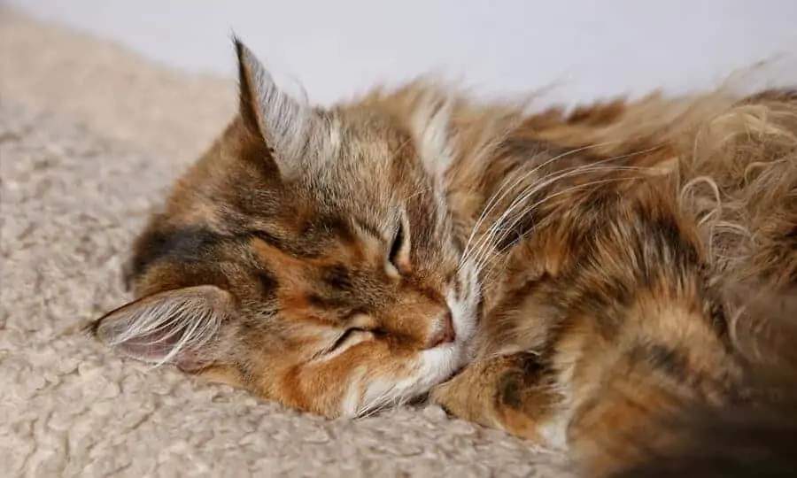

Gatos são mestres em esconder dor. Diferente dos cães, os felinos evoluíram como presas e predadores. Na natureza, demonstrar fragilidade pode significar risco real à sobrevivência.
O resultado desse instinto? Um gato com dor frequentemente parece apenas “mais quieto” ou “mais distante”.
🧠 Por que eles escondem?Não é teimosia, é biologia. Felinos tendem a mascarar vulnerabilidade. Isso significa que a ausência de choro não indica conforto. Pequenas mudanças são os maiores alertas.
💤 1. Mudança no nível de atividadeMuitos tutores interpretam como preguiça ou idade, mas fique atento se o gato:
- Dorme muito mais que o habitual
- Brinca menos ou evita interação
- Fica retraído ou escondido por muito tempo
Gatos raramente mancam. Note se ele tem relutância em pular em locais altos que antes amava, ou se demonstra rigidez ao subir no sofá.
👁️ 3. Expressões faciais (Grimace Scale)Sim, gatos demonstram dor pelo rosto! Fique alerta para olhos semicerrados, olhar "apagado" e orelhas levemente retraídas ou tensas.
👅 4. Lambedura excessivaQuando um gato lambe repetidamente uma área específica, ele pode estar tentando "limpar" uma dor localizada ou inflamação articular.
Procure um veterinário imediato se houver dificuldade respiratória, incapacidade de se mover, apatia extrema ou recusa total de comida.
Você conhece seu gato melhor que ninguém. Se o comportamento mudou sem explicação clara, a dor deve sempre ser considerada. Identificar cedo preserva a longevidade do seu amigo.
© 2026 FofoPet - Siga para mais dicas e curiosidades.